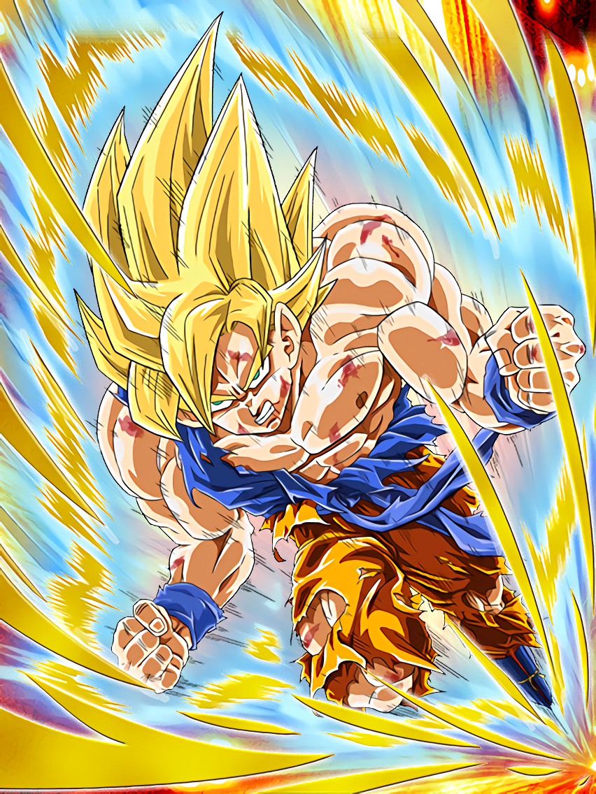
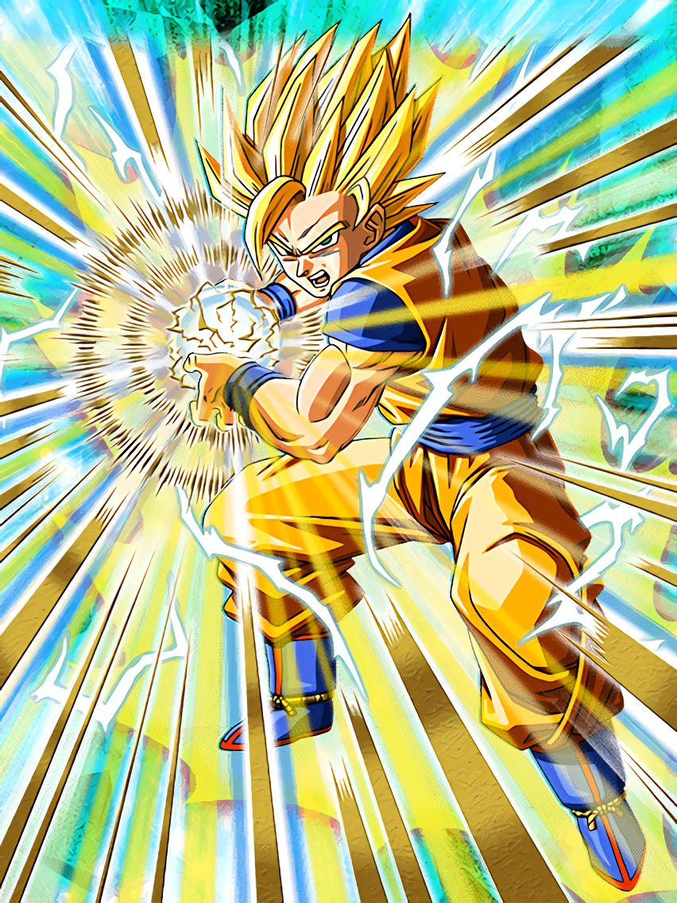
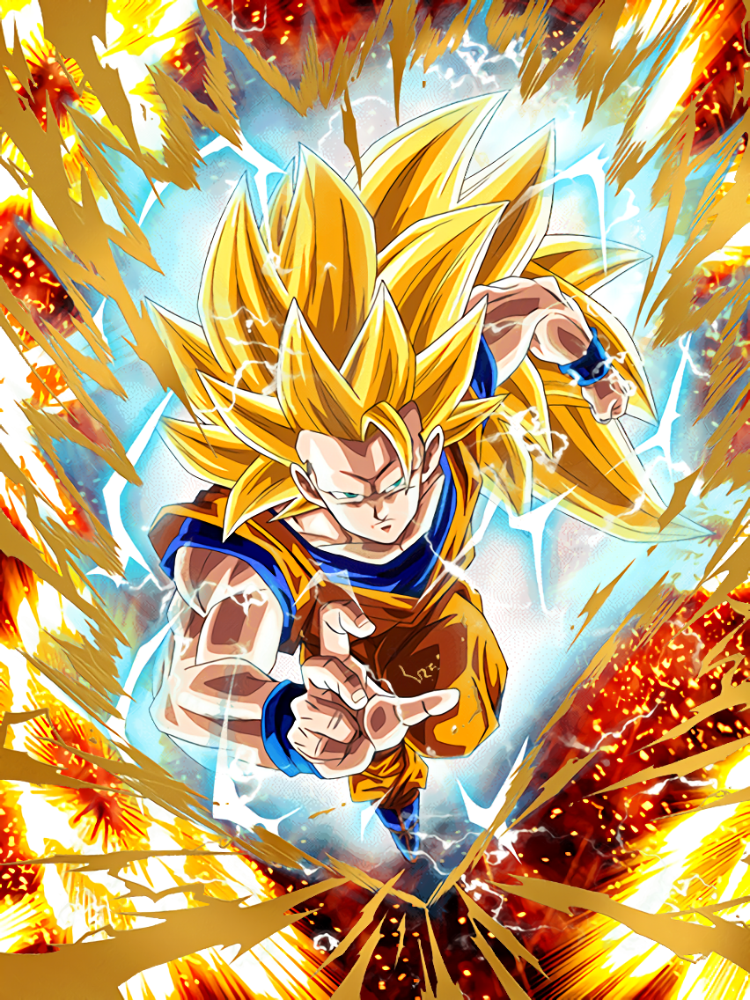
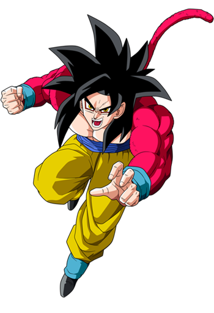
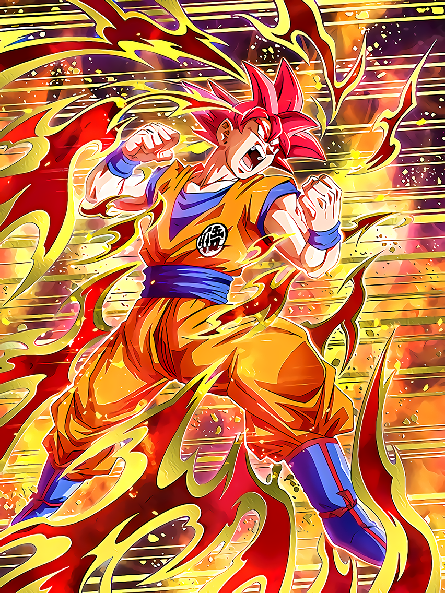
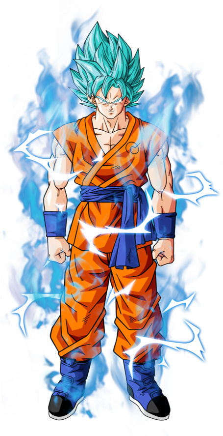
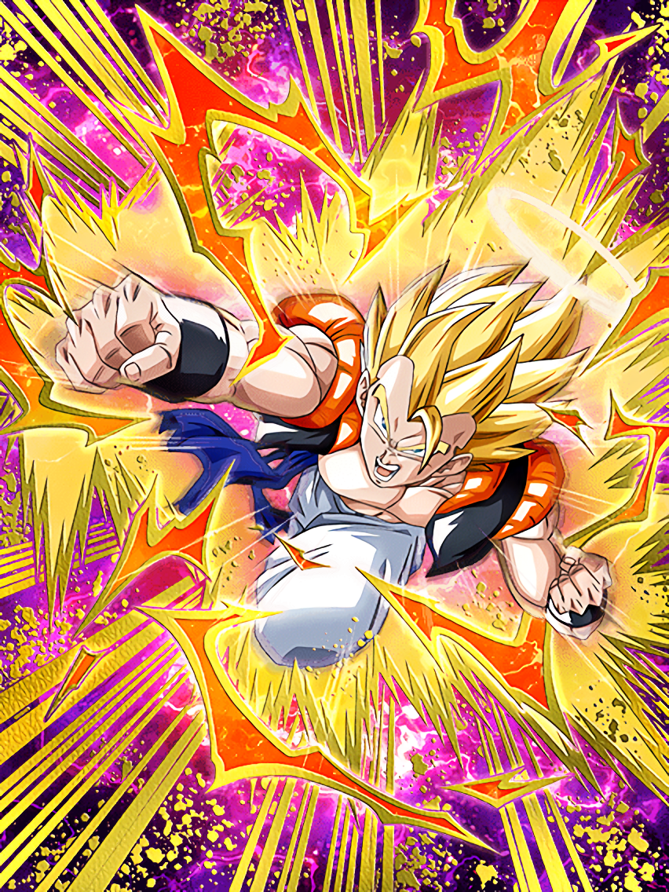
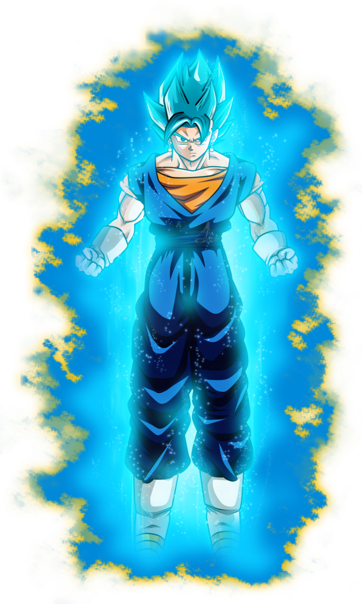
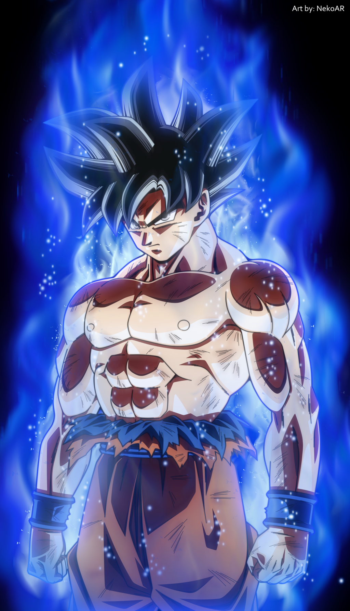

-
Base Form

The base form of Goku is his main form. It is not his most powerful form but he can still kick some butt with it. He is always in base form outside of battle and maybe sometimes
in battle as well.
-
Super Sayain

A transformation that ups Goku's power level twice as high as base form and increases his speed and strength. His hair also turns yellowish gold and
he releases a yelowish gold aura.
-
Super Sayain 2

Goku's second super saiyan transformation that triples his power from base and is It is very similar to the original form in
appearance and attainment; however, the power output is far greater, as speed, strength, and energy output all drastically increase.
Goku also emits lightning along with his aura.
-
Super Sayain 3

Goku's third super saiyan transformation that he was the first to achieve. It makes Goku or anyone a little more intense and
grows out the hair longer. he also increases in speed and power level.
-
Super Sayain 4

The only way a Saiyan can attain Super Saiyan 4 is if they become a Golden Great Ape and regain conscious control over the form.
You gain immense power and speed and look like a part monkey but you keep a calm mind and are able to think on your feet.
-
Super Sayain God

A from achived only by having five saiyan born saiyans lend their energy to one single saiyan to create the super saiyan God.
This form can only be used for a short amount of time before its users energy is totally depleted and kills them. It gives Goku red fire hair and
tones him down to be ripped and toned. His power outmatches any of the other saiyan forms and becomes a diety.
-
Super Sayain Blue

A form achieved mostly only by first attaining super saiyan god and becoming used to that power then a saiyan is then able to take the power
of super saiyan god and the form of super saiyan to achieve a greater power than that of ssgod.
-
Gogeta

A form of Goku and Vegeta combined into one being from the fusion dance that allows them to combine their power levels and become stronger as one.
he has vegeta's facial attributes but goku's tall body. he is never seen not in super saiyan form.
-
Vegito SSB

A form achived by goku and vegeta by using the potara earrings to fuse into one being and are never to be seperated unless somehow are. They achieve
greater strength than that of even gogeta and become a duo diety.
-
Limit Breaker Goku

No information on limit breaker exists due to it not fully being complete but please check in the next year or so!!